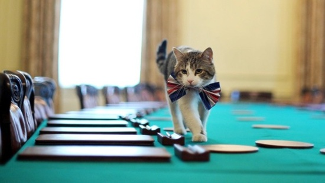
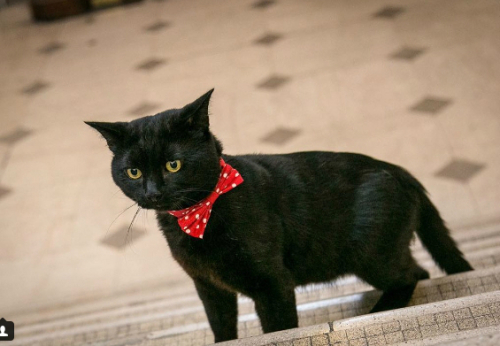

소개
수석 수렵 보좌관은 영국의 공무원 직책으로 본인들이 상주 하고 있는 건물 안에 존재하는 쥐를 잡아내어 박멸 하여 건물 내의 위생 및 미관을 유지하는 일을 하는 공무원을 뜻한다. 현재 재무부의 글래드스톤,외무부의 파머스톤,총리 관저의 래리 총 세 마리의 고양이가 재직 중이며 이들은 각각 소속된 정부 부처에서 열리는 각종 행사나 캠페인에 참여 하기도 한다.

외무부 소속 파머스톤이 외무부 입성 후 20번째 쥐를 잡은 기념으로 찍은 사진.

제 11대 총리 관저 수렵 보좌관 래리가 회의장을 돌아보며 위생 상태를 점검하고 있다.

최근에 임명된 재무부의 글래드스톤의 늠름한 모습.